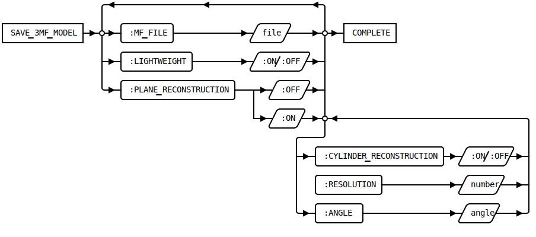

LOAD_MANUFACTURING_DATA [Public Dialog]
Package: 3d-printing.data-exchange (Nick name(s): :3dp.x)
Modeling load dialog extension for loading manufacturing data files (STL, 3mf).
Loads a manufacturing data file from disk and creates a 3d model (solid or face part). A STL or 3mf file can be loaded with or without data reduction. Data reduction is achieved through reconstruction of analytic surfaces from groups of mesh triangles. See Import Examples for a comparison of importing with or without data reduction.

File type selection. Here Manufacturing Data load is selected.
Open manufacturing data load load options dialog.
:LIGHTWEIGHT- When checked the STL data is imported as lightweight model (graphics with basic measuring capabilities). If unchecked the STL data is imported as full (B-rep) model.:PLANE_RECONSTRUCTION- When selected, planar regions are identified and converted to planar 3d model faces. The default can be customized by setting the*3DP-PLANE-RECOGNITION-ENABLED*option in3dp_customize.lsp.Note: This option is enforced if the number of faces in the imported model would exceed the number of faces specified in the configurable parameter
*3DP-FACE-COUNT-LIMIT*CYLINDER_RECONSTRUCTION- When selected, cylindrical regions are identified and converted to cylindrical 3d model faces. Note: this option is only available when:PLANE_RECONSTRUCTIONis selected:RESOLUTION- Optional approximation precision for surface recognition (in mm). This option is available only if at least one recognition optios in selected. The default can be customized by setting the*3DP-DEFAULT-RECOGNITION-PRECISION*option in3dp_customize.lsp. Typical resolutions fall in the range from 0.1mm(coarse) to 0.000001mm (fine). Note: this option is only available when:PLANE_RECONSTRUCTIONis selected.:MERGE- Remove mergable edges after data reduction has been applied. The default can be customized by setting the*3DP-MERGE-ENABLED*option in3dp_customize.lsp. Note: this option is only available when:PLANE_RECONSTRUCTIONis selected.Display this help page.
Syntax

Loading STL Files Without Data Reduction
To load STL files with minimal processing,
set all surface recognition options to :OFF. Only minimal repairs are applied. This import
option is primarily for smaller STL models (< 150,000 triangles) if maximum precision is required.
Modeling automatically chooses the optimal model resolution.
Importing STL models with more than 150,000 triangles may cause standard Modeling to
run out of system resources (primaily stack space).
Note: To import large models without data reduction a custom build of Modeling is required.
Loading STL Files With Data Reduction
To load STL models with data reduction, set at least one surface recognition option to :ON.
Surface recognition reduces model complexity by a factor from 2-20 depending on the
quality and configuration of the manufacturing data.
See Import Examples for examples of the effect of data reduction.
Reviewing the Import Options

A report of the import options for each imported part can be generated by clicking on the Mesh Parameters context menu action of the Mesh Parameters associated with the part. The textual report is shown in the Modeling output box.
Future Enhancements
Following enhancements are planned for future releases:
- Recognition of cones, spheres
- Healing of incomplete models (locally convex holes).
- Custom Modeling build to support larger models without data reduction.